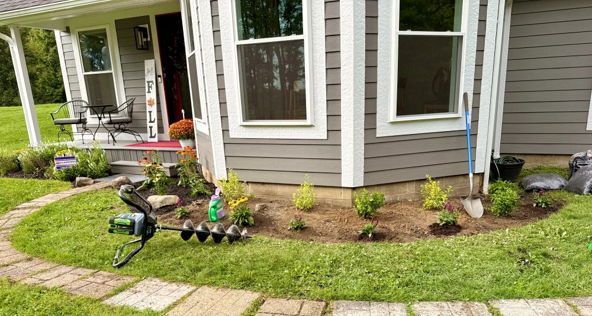
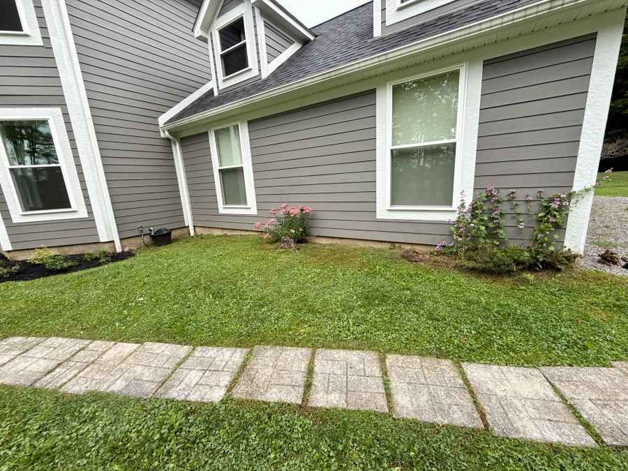
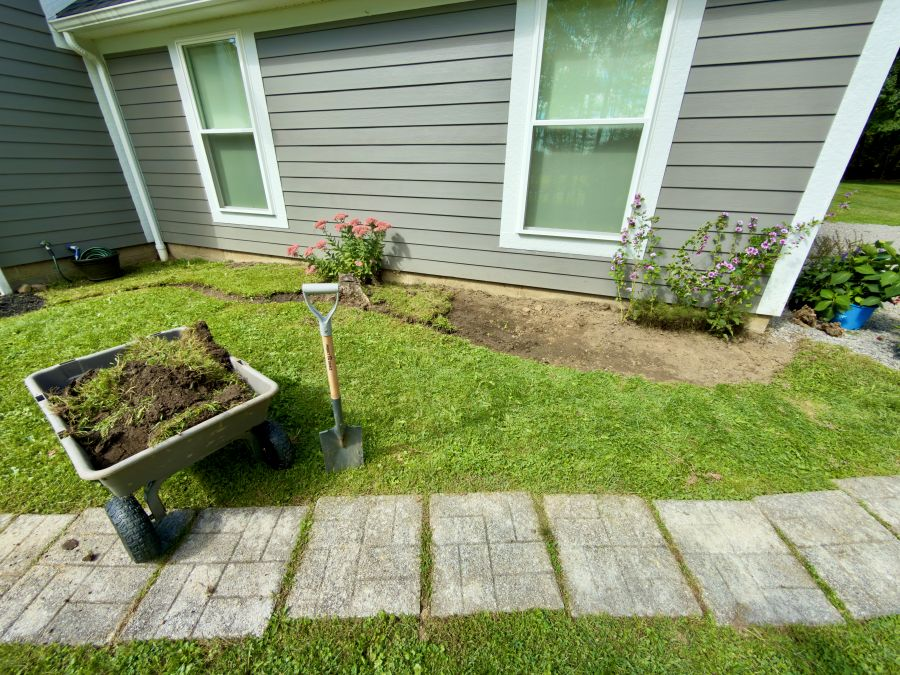
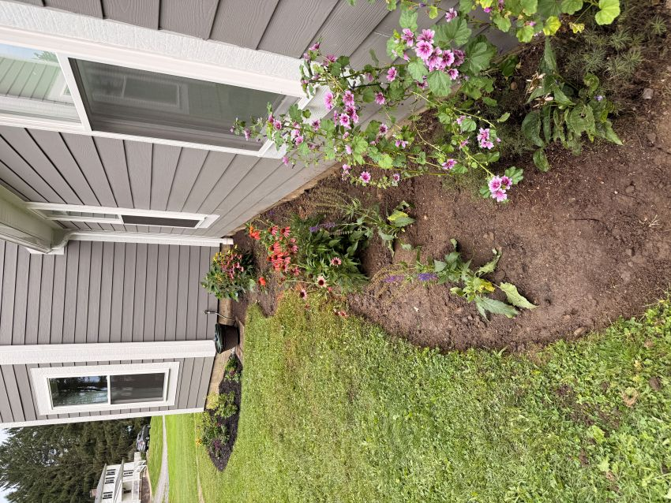
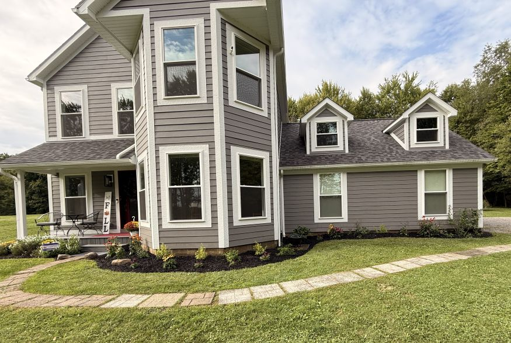

Earlier this year, we took our first tentative steps toward reclaiming the front of the house from decades of neglect. What began as a single focused bed near the entryway has now grown into a complete transformation. This week, we finished the entire span of the front landscape—stretching all the way from the front door over to the driveway.
Opening up the ground in front of the dining room presented its usual challenges: the surface soil was rock-hard after years of packing, though happily rich and workable underneath. Thank goodness for our eGo battery-operated auger, which made digging post holes and planting pockets an absolute breeze.

Moving further down toward the garage windows, the area had become a tangle of encroaching grass, an old tree stump (since removed), and an isolated clump of sedum which we carefully dug up and relocated to the rear yard. Amidst the overgrowth, however, we found patches of mallow and hollyhock that had been coming up on their own for years. Instead of clearing them out, we chose to keep and integrate them directly into the new final design as living testaments to the land's resilience.

Shaping and Planting the Space
When cutting the new bed lines in front of the garage, I tried to adopt a natural, sloping S-curve inspired by the proportions of the golden ratio, giving the edge a flowing, organic grace rather than a rigid geometric line. As we stripped the grass, it went straight into our wagon—repurposed immediately to help start our new hugelkultur beds elsewhere on the property.

For the plant selection, we leaned entirely into hardy perennials designed to handle our northwest Pennsylvania climate while putting on a heavy pollinator display. The palette features dependable Coneflower, striking red lobelia, Emerald Crest bluebeard, Russian sage, and Rose Marvel sage. Tucked neatly into the architectural corner where the dining room wall meets the garage wall, we also added a handsome hydrangea to anchor the transition.

With the final plants in the ground, the entire front of the house finally matches the vision we’ve been building toward. We are hoping these roots have plenty of time to settle in and hunker down for the winter months ahead, setting the stage for a marvelous, buzzing pollinator garden come next spring.